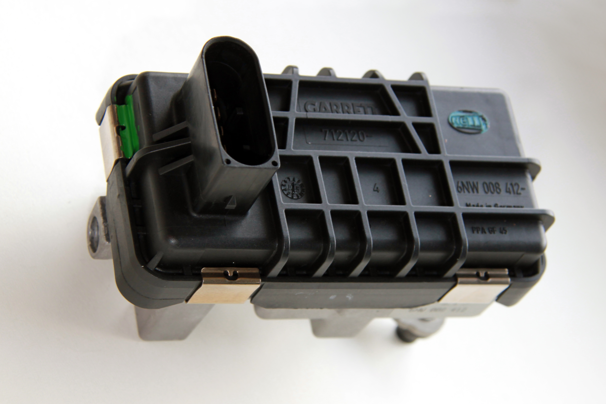
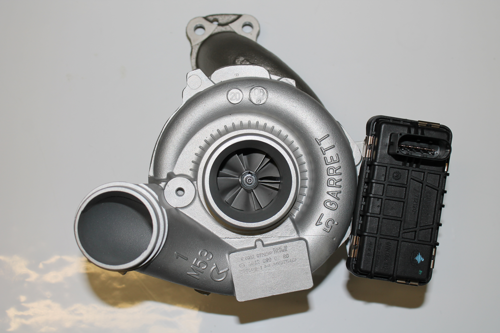

Als einziges Unternehmen in Österreich bieten wir die professionelle Reparatur von Hella-Ladedruckstellern an.
Mit der neuesten Flowbench der Firma Viscom haben wir als einziges Unternehmen Österreichs die Möglichkeit eine Turboladerkalibrierung auf Hersteller-Original-Niveau durchzuführen sowie den Ladedrucksteller zu programmieren.
Der Ladedrucksteller ist defekt – kein Problem für uns. Als einziges Unternehmen Österreichs bieten wir Ihnen die professionelle Reparatur Ihres kaputten elektronischen Ladedruckstellers an. Nach erfolgter Reparatur wird eine Aktualisierung der Software am Prüfstand gemacht und eine Überprüfung des Ladedruckstellers auf seine Funktionsfähigkeit durchgeführt. Es werden von uns für die Reparatur ausschließlich Ersatzteile in Originalqualität verwendet.
Tauschen Sie also nicht vorschnell Ihren Turbolader, sondern ersparen Sie sich Kosten und lassen Sie nur den kaputten Ladedrucksteller reparieren. Sollte nicht der Ladedrucksteller kaputt sein, sondern der Turbolader selbst, sind Sie bei uns auch richtig: Wir reparieren Ihren defekten Turbolader. Sie erhalten Ihren eigenen Turbolader oder, auf Wunsch, einen Tauschlader, welche in keinster Weise einem Neuteil an Qualität und Lebensdauer nachstehen. Dies bieten wir Ihnen als günstige Alternative zum meist teuren Neuteil. Für die Reparatur stehen die modernsten Maschinen, die am Markt verfügbar sind, zur Verfügung. Sollte eine Reparatur nicht mehr möglich sein oder sich im Vergleich zum Neuteil nicht rechnen, können wir Ihnen auch einen neuen Turbolader anbieten.
Wir bieten |
|---|
| fundiertes Fachwissen mit 20-jähriger Erfahrung am Turboladersektor |
| Qualität zu fairen Preisen |
| neueste Technik |
Unser Programm umfasst: |
|---|
| Neue Turbolader |
| Instandgesetzte Turbolader |
| Tauschlader |
| Individuelle Reparatur von Turboladern |
| Turboladerbegutachtung durch Sachverständigen |
| Folgende Ladedrucksteller werden von uns repariert oder im Austausch angeboten (Altteilkaution: € 120,– inkl. MWSt.) |
|---|
| Hella Ladedrucksteller |
| Garrett Ladedrucksteller |
| MHI Mitsubishi Ladedrucksteller |
| Siemens Continental VDO Ladedrucksteller |
Mercedes, Ford, BMW, Audi, Jaguar, Chrysler, Peugeot, Volvo, Land-Rover, Dodge, Jeep, VW, Toyota, Alfa, Fiat, Citroen, Renault, Seat, Skoda, uvm.
Um Ihnen das Suchen zu erleichtern, können Sie auf dieser Liste die Nummer Ihres Getriebes, Ihres Turboladers oder Ihres Ladedruckstellers suchen. Somit wissen Sie, ob wir Ihren elektronischen Ladedrucksteller reparieren können oder nicht. Sollten Sie die Nummer nicht finden, kontaktieren Sie uns telefonisch unter +43 7673 75374 oder per Mail unter office@mts-turbolader.at. Sicher können wir Ihnen bei Ihrem Anliegen weiterhelfen.
Simulieren Sie mit dem Gestänge am Turbolader die Bewegung des LDS. Hiermit wird die variable Turbinen- Geometrie (VTG) auf Leichtgängigkeit bzw. Verklemmung untersucht. Die VTG muss ohne Mühe beweglich sein! Sollte die VTG einen Widerstand bei der Bewegung aufweisen, kontaktieren Sie uns unter 07673 / 75374.
Fehlercodes sind VOR der Inbetriebnahme des Fahrzeuges zu löschen!